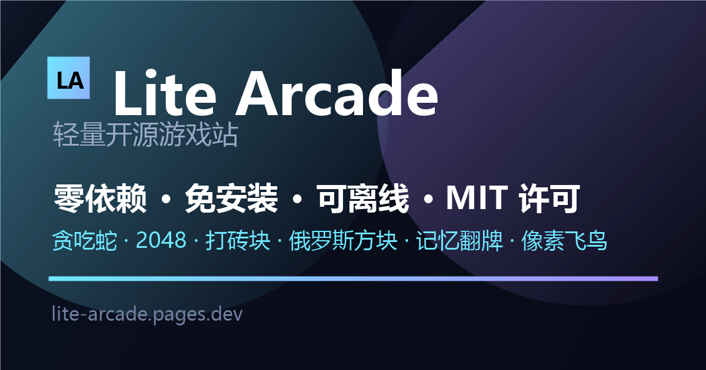

贪吃蛇 Snake
经典网格贪吃蛇：吃到食物变长，撞墙或撞到自己即结束。方向键或滑动屏幕控制。

3D 主视觉由 Blender MCP 生成并自托管；尊重“减少动效”偏好，无 WebGL 时自动回退为静态封面。
每款游戏都是独立的静态页面，支持键盘与触屏，进度与最高分保存在浏览器本地（localStorage）。
经典网格贪吃蛇：吃到食物变长，撞墙或撞到自己即结束。方向键或滑动屏幕控制。
合并相同数字方块，目标拼出 2048。每步都会随机生成一个新方块，棋盘填满且无法合并时结束。
控制挡板反弹小球，击碎全部砖块。球速随回合递增，漏球三次即结束。
七种方块下落堆叠，填满一行即消除并计分。支持左右移动、旋转与软降。
翻开卡片配对相同图案，以最少步数清空全部牌面。记录步数与最短用时。
点击或按空格让小鸟上升，穿越管道间隙；碰到管道或落地即结束。
5 转轮 × 3 行、5 条赔付线，含 Wild 与免费旋转，点击画布即可下注转动。
页面加载时实时请求 GitHub Search API（topic:game，近 90 天有提交，按 star 排序）；接口不可用时自动回退到内置快照。
从四个公开来源采集并人工筛选：itch.io 开源标签、GitHub Trending、Ludum Dare 游戏 jam 作品、Simple Game Tutorials。可按来源筛选与关键词搜索。
正在加载目录数据…
| 来源 | 入口 | 采集方式 | 筛选标准 |
|---|---|---|---|
| itch.io 开源榜 | itch.io/games/tag-open-source | 抓取列表页链接 | 可核实的知名开源作品，含模拟器、RTS、竞速 |
| GitHub Trending | github.com/trending | 趋势页 + Search API | topic:game 且近期有提交，按 star 排序 |
| Ludum Dare | LudumDare 仓库 | Search API topic:ludum-dare | 源码完整、可独立运行的 jam 作品 |
| Simple Game Tutorials | simplegametutorials.github.io | 读取仓库目录树 | 代码极简、适合移植到 Web 的经典玩法 |
以下问答与页面内的 FAQPage 结构化数据保持一致，便于生成式引擎直接引用。
Lite Arcade 是一个零依赖的静态开源网页游戏站，内置 6 款用原生 HTML5 Canvas 实现的小游戏（贪吃蛇、2048、打砖块、俄罗斯方块、记忆翻牌、像素飞鸟），并提供按 itch.io 开源榜、GitHub Trending、Ludum Dare 与 Simple Game Tutorials 四个来源筛选的开源游戏目录。
不需要。所有游戏在浏览器内直接运行，不下载插件、不注册账号、不上传数据；安装为 PWA 后还可离线启动。
是。站内自研游戏以 MIT 许可发布，源码位于每个游戏页面的“查看源码”入口；目录页收录的第三方项目保留其原许可，并在条目中标注来源。
GEO（Generative Engine Optimization，生成式引擎优化）指让站点内容更容易被 ChatGPT、Perplexity、Claude、Google AI Overviews 等生成式引擎检索、理解与引用。Lite Arcade 采用的手段包括 llms.txt、AI 爬虫白名单、FAQPage 结构化数据、答案前置段落与稳定的章节锚点。
在仓库根目录执行 deploy/build.ps1 生成 dist 目录，再执行 deploy/serve.ps1 启动本地静态服务；也可使用 deploy/Dockerfile 构建 nginx 镜像运行，或直接把 dist 上传到任意静态托管。